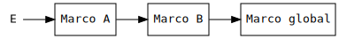
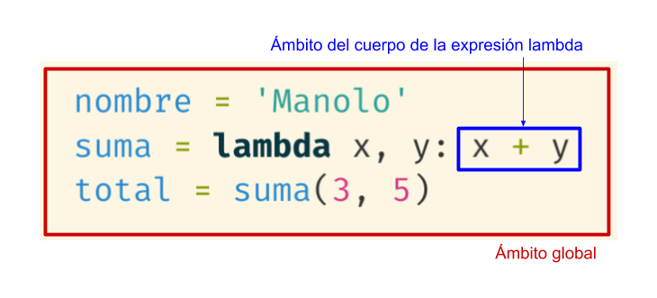
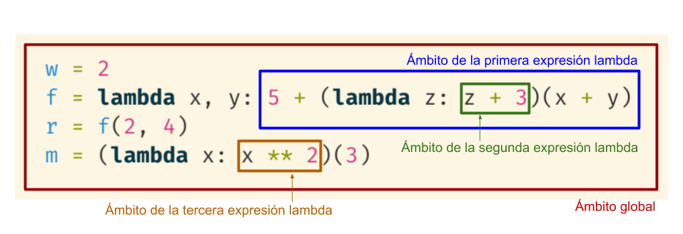

Abstracciones funcionales
Ricardo Pérez López
IES Doñana, curso 2020/2021
1 Abstracciones lambda
1.1 Expresiones lambda
Las expresiones lambda (también llamadas abstracciones lambda o funciones anónimas en algunos lenguajes) son expresiones que capturan la idea abstracta de «función».
Son la forma más simple y primitiva de describir funciones en un lenguaje funcional.
Su sintaxis (simplificada) es:
⟨expresión_lambda⟩ ::=lambda[⟨lista_parámetros⟩]:⟨expresión⟩
⟨lista_parámetros⟩ :=identificador(,identificador)*Por ejemplo:
1.2 Parámetros y cuerpos
Los identificadores que aparecen entre la palabra clave
lambday el carácter de dos puntos (:) son los parámetros de la expresión lambda.La expresión que aparece tras los dos puntos (
:) es el cuerpo de la expresión lambda.En el ejemplo anterior:
Los parámetros son
xey.El cuerpo es
x + y.Esta expresión lambda captura la idea general de sumar dos valores (que en principio pueden ser de cualquier tipo, siempre y cuando admitan el operador
+).
1.3 Aplicación funcional
De la misma manera que decíamos que podemos aplicar una función a unos argumentos, también podemos aplicar una expresión lambda a unos argumentos.
Por ejemplo, la aplicación de la función
maxsobre los argumentos3y5es una expresión que se escribe comomax(3, 5)que denota el valor cinco (o sea, que la llamada a la función devuelve5).Igualmente, la aplicación de una expresión lambda como
sobre los argumentos
4y3se representa así:
1.3.1 Evaluación de una aplicación funcional
En nuestro modelo de sustitución, la evaluación de la aplicación de una expresión lambda consiste en sustituir, en el cuerpo de la expresión lambda, cada parámetro por su argumento correspondiente (por orden) y devolver la expresión resultante parentizada (entre paréntesis).
A esta operación se la denomina aplicación funcional o β-reducción.
Siguiendo con el ejemplo anterior:
sustituimos en el cuerpo de la expresión lambda los parámetros
xeypor los argumentos4y3, respectivamente, y parentizamos la expresión resultante, lo que da:que simplificando (según las reglas del operador
+) da7.
1.3.2 Llamadas a funciones
Si hacemos la siguiente definición:
a partir de ese momento podemos usar
sumaen lugar de su valor (la expresión lambda), por lo que podemos hacer:en lugar de
Cuando aplicamos a sus argumentos una función así definida también podemos decir que estamos invocando o llamando a la función. Por ejemplo, en
suma(4, 3)estamos llamando a la funciónsuma, o hay una llamada a la funciónsuma.
La evaluación de la llamada a
suma(4, 3)implicaría realizar los siguientes tres pasos y en este orden:Sustituir el nombre de la función
sumapor su definición.Evaluar sus argumentos.
Aplicar la expresión lambda a sus argumentos.
Esto implica la siguiente secuencia de reescrituras:
Como una expresión lambda es una función, aplicar una expresión lambda a unos argumentos es como llamar a una función pasándole dichos argumentos.
Por tanto, ampliamos ahora nuestra gramática de las expresiones en Python incorporando las expresiones lambda como un tipo de función:
⟨llamada_función⟩ ::= ⟨función⟩([⟨lista_argumentos⟩])
⟨función⟩ ::=identificador
|(⟨expresión_lambda⟩)
⟨expresión_lambda⟩ ::=lambda[⟨lista_parámetros⟩]:⟨expresión⟩
⟨lista_parámetros⟩ ::=identificador(,identificador)*
⟨lista_argumentos⟩ ::= ⟨expresión⟩(,⟨expresión⟩)*
Ejemplo
Dado el siguiente código:
¿Cuánto vale la expresión siguiente?
Según el modelo de sustitución, reescribimos:
suma(4, 3) * suma(2, 7) # definición de suma = (lambda x, y: x + y)(4, 3) * suma(2, 7) # evaluación de 4 = (lambda x, y: x + y)(4, 3) * suma(2, 7) # evaluación de 3 = (lambda x, y: x + y)(4, 3) * suma(2, 7) # aplicación a 4 y 3 = (4 + 3) * suma(2, 7) # evalúa 4 + 3 = 7 * suma(2, 7) # definición de suma = 7 * (lambda x, y: x + y)(2, 7) # evaluación de 2 = 7 * (lambda x, y: x + y)(2, 7) # evaluación de 7 = 7 * (lambda x, y: x + y)(2, 7) # aplicación a 2 y 7 = 7 * (2 + 7) # evaluación de 2 + 7 = 7 * 9 # evaluación de 7 * 9 = 63
1.4 Variables ligadas y libres
Si un identificador que aparece en el cuerpo de una expresión lambda, también aparece en la lista de parámetros de esa expresión lambda, a ese identificador le llamamos variable ligada de la expresión lambda.
En caso contrario, le llamamos variable libre de la expresión lambda.
En el ejemplo anterior:
los dos identificadores que aparecen en el cuerpo (
xey) son variables ligadas, ya que ambos aparecen también en la lista de parámetros de la expresión lambda.En cambio, en la expresión lambda:
xeyson variables ligadas mientras quezes una variable libre.
En realidad, una variable ligada y un parámetro son la misma cosa.
Tan sólo cambia su denominación dependiendo del lugar donde aparece su identificador en la expresión lambda:
Si aparece antes del «
:», le llamamos «parámetro».Si aparece después del «
:», le llamamos «variable ligada».
Por ejemplo: en la siguiente expresión lambda:
el identificador
xaparece dos veces, pero en los dos casos representa la misma cosa. Tan sólo se llama de distinta forma («parámetro» o «variable ligada») dependiendo de dónde aparece.
2 Ámbitos léxicos
2.1 Ámbitos
Un ámbito es una porción del código fuente de un programa.
Decimos que ciertas construcciones sintácticas definen ámbitos.
Cuando una construcción define un ámbito, la sintaxis del lenguaje determina dónde empieza y acaba ese ámbito en el código fuente.
Por tanto, siempre se puede determinar sin ambigüedad si una instrucción está dentro de un determinado ámbito, tan sólo leyendo el código fuente del programa y sin necesidad de ejecutarlo.
Los ámbitos se anidan recursivamente, o sea, que están contenidos unos dentro de otros.
Por tanto, una instrucción puede estar en varios ámbitos al mismo tiempo (anidados unos dentro de otros). De todos ellos, el ámbito más interno es el que no contiene, a su vez, a otro ámbito.
En un momento dado, el ámbito actual es el ámbito más interno en el que se encuentra la instrucción que se está ejecutando actualmente.
El concepto de ámbito es un concepto nada trivial y, a medida que vayamos incorporando nuevos elementos al lenguaje, tendremos que ir adaptándolo para tener en cuenta más condicionantes.
Por ahora sólo hemos tenido un ámbito llamado ámbito global:
Si se está ejecutando un script en el intérprete por lotes (con
python script.py), el ámbito global abarca todo el script, desde la primera instrucción hasta la última.Si estamos en el intérprete interactivo (con
pythonoipython3), el ámbito global abarca toda nuestra sesión con el intérprete, hasta que finalicemos la misma.
En el momento en que se empieza a ejecutar un script o se arranca una nueva sesión con el intérprete interactivo, se entra en el ámbito global.
Del ámbito global se sale cuando se finaliza la ejecución del script o se cierra el intérprete interactivo.
Las definiciones globales son aquellas definiciones que se ejecutan cuando el ámbito actual es el ámbito global.
Las ligaduras que crean las definiciones globales se denominan ligaduras globales.
Esas ligaduras se almacenan en el marco global.
Por eso podemos decir que el marco global va asociado al ámbito global.
Todos los marcos van asociados a ámbitos, pero no todos los ámbitos van asociados a marcos.
Por ejemplo, en el siguiente script se ejecutan cuatro instrucciones. El ámbito actual de cada una de las instrucciones es el ámbito global, que es el único ámbito que existe en el script:

Además, todas las ligaduras que se crean se almacenan en el marco global, que es el único que existe en memoria durante la ejecución de ese script.

2.2 Ámbito de creación de una ligadura
El ámbito de creación de una ligadura es el ámbito actual de la instrucción que define la ligadura.
Dicho de otra forma: es el ámbito más interno que contiene la instrucción que define la ligadura.
Ese ámbito siempre está definido por una construcción sintáctica.
Por tanto, sus límites vienen marcados únicamente por la sintaxis de la construcción sintáctica que define el ámbito.
Se dice que una ligadura es local a su ámbito de creación.
2.3 Ámbito de una ligadura
El ámbito de una ligadura es la porción del código fuente en la que existe y es visible dicha ligadura.
A diferencia de los ámbitos de creación, el ámbito de una ligadura no viene definido simplemente por una construcción sintáctica del lenguaje, sino por:
el punto en el que se crea la ligadura y
el ámbito de creación de la ligadura, que tiene que ser un ámbito definido por una construcción sintáctica.
El ámbito de una ligadura:
Empieza en el punto donde se crea la ligadura (es decir, el punto donde se ejecuta la instrucción que define la ligadura).
Termina donde lo hace el ámbito de creación de la ligadura.
Por eso, el ámbito de una ligadura está contenido dentro del ámbito de creación de esa ligadura, pero ambos ámbitos no tienen por qué coincidir exactamente.
Los dos ámbitos acaban en el mismo punto, pero no tienen por qué empezar en el mismo punto.
Esto se debe a que una ligadura empieza a existir en el momento en el que se ejecuta la instrucción que la crea, y no antes.
Por tanto, las ligaduras visibles dentro de un ámbito serán sólo las que se hayan creado en ese ámbito hasta ese momento.
El ámbito de una ligadura y el ámbito de creación de una ligadura son dos conceptos distintos, aunque a veces pueda coincidir que ambos ámbitos tengan los mismos límites para una determinada ligadura.
Esto último ocurre sólo si la ligadura se crea justo al comienzo del ámbito de creación de la ligadura.
Pero el ámbito de una ligadura no puede ser el ámbito de creación de otra ligadura.
En el siguiente ejemplo vemos los ámbitos de varias ligaduras. Todas esas ligaduras se definen en el ámbito global, por lo que el ámbito de creación de todas ellas es el ámbito global.
Por eso, decimos que cada una de esas ligaduras es una ligadura global.

El ámbito de cada una de esas ligaduras empieza justo donde se crea la ligadura y termina al final de su ámbito de creación.
Es importante entender que, aunque el ámbito de
y→99está contenido en el dex→25, éste último no se tiene en cuenta a la hora de determinar cuál es el ámbito de creación de la ligaduray→99(porque es el ámbito de una ligadura, no el ámbito de creación de una ligadura).
- Es importante no confundir «ámbito», «ámbito de creación de una ligadura» y «ámbito de una ligadura».
Ámbito:
Porción del código fuente de un programa.
Ámbito de creación de una ligadura:
El ámbito actual de la instrucción que define la ligadura; o, dicho de otra forma, el ámbito más interno en el que se crea una ligadura. Los límites de ese ámbito sólo vienen determinados por la sintaxis del lenguaje, ya que ciertas construcciones sintáticas definen su propio ámbito. A veces, además, este ámbito va asociado a un marco.
Ámbito de una ligadura:
Porción de código fuente en el que la ligadura existe y es visible. Va desde el punto donde se crea la ligadura hasta el final de su ámbito de creación. El ámbito de una ligadura no puede ser el ámbito de creación de otra ligadura.
Si el ámbito de creación de la ligadura lleva asociado un marco, la ligadura se almacenará en ese marco.
Si no, entonces la ligadura se almacenará en el marco del ámbito de creación más interno que contenga al actual y que sí lleve asociado un marco.
Ese marco se denomina el marco actual.
Hasta ahora, todas las ligaduras las hemos definido en el ámbito global, por lo que se almacenan en el marco global.
Por eso también decimos que esas ligaduras tienen ámbito global, o que pertenecen al ámbito global, o que están definidas en el ámbito global, o que son globales.
Ampliaremos ahora el concepto de ámbito para incluir los aspectos nuevos que incorporan las expresiones lambda.
2.4 Ámbito de un identificador
A veces, por economía del lenguaje, se suele hablar del «ámbito de un identificador», en lugar de hablar del «ámbito de creación de la ligadura que liga ese identificador con un valor».
Por ejemplo, en el siguiente script:
tenemos que:
En el ámbito global, se crea una ligadura que liga al identificador
xcon el valor25.Por tanto, se dice que el ámbito de creación de esa ligadura es el ámbito global.
Pero también se suele decir que «el identificador
xes global» (o, simplemente, que «xes global»), asociando al ámbito no la ligadura, sino el identificador en sí.
Pero hay que tener cuidado, ya que ese mismo identificador puede ligarse en ámbitos diferentes.
Por tanto, no tendría sentido hablar del ámbito que tiene ese identificador (ya que podría tener varios) sino, más bien, del ámbito que tiene una aparición concreta de ese identificador.
Por eso, sólo deberíamos hablar del ámbito de un identificador cuando no haya ninguna ambigüedad respecto a qué aparición concreta nos estamos refiriendo.
Por ejemplo, en el siguiente script:
el identificador
xque aparece en la línea 1 y el que aparece en la línea 2 pertenecen a ámbitos distintos (como veremos en breve).
2.5 Ámbito de un parámetro
El cuerpo de la expresión lambda define un ámbito.
Por tanto, cuando se va a evaluar una aplicación funcional, se entra en dicho ámbito.
Además, cada aplicación de una expresión lambda crea un nuevo marco en la memoria, que representa esa ejecución concreta de dicha expresión lambda.
Cuando se aplica una expresión lambda a unos argumentos, cada parámetro de la expresión lambda se liga a uno de esos argumentos en el orden en que aparecen en la aplicación funcional (primer parámetro con primer argumento, segundo con segundo, etcétera).
Esas ligaduras se almacenan en el marco de la expresión lambda nada más entrar en el cuerpo de la expresión lambda.
Ese marco se eliminará de la memoria cuando se termine de ejecutar la expresión lambda.
En consecuencia, podemos decir que:
El ámbito de creación de la ligadura entre un parámetro y su argumento es el cuerpo de la expresión lambda.
El ámbito de esa ligadura coincide con su ámbito de creación.
Esto se resume diciendo que «el ámbito de un parámetro es el cuerpo de su expresión lambda».
También se dice que el parámetro tiene un ámbito local al cuerpo de la expresión lambda o que es local a dicha expresión lambda.
Como el ámbito de una ligadura es la porción del código en el que dicha ligadura tiene validez, eso significa que sólo podemos acceder al valor de un parámetro dentro del cuerpo de su expresión lambda.
En resumen:
El ámbito de un parámetro es el ámbito de la ligadura que se establece entre éste y su argumento correspondiente, y se corresponde con el cuerpo de la expresión lambda donde aparece.
2.6 Ámbito de una variable ligada
Hemos visto que a los parámetros de una expresión lambda se les llama variables ligadas cuando aparecen dentro del cuerpo de dicha expresión lambda.
Por tanto, todo lo que se dijo sobre el ámbito de un parámetro se aplica exactamente igual al ámbito de una variable ligada.
Recordemos que el ámbito de un parámetro es el cuerpo de su expresión lambda, que es la porción de código donde podemos acceder al valor del argumento con el que está ligado.
Por tanto, el ámbito de una variable ligada es el cuerpo de la expresión lambda donde aparece, y es el único lugar dentro del cual podremos acceder al valor de la variable ligada (que también será el valor del argumento con el que está ligada).
En consecuencia, también se dice que la variable ligada tiene un ámbito local al cuerpo de la expresión lambda o que es local a dicha expresión lambda.
Por contraste, las variables, identificadores y ligaduras que no tienen ámbito local se dice que tienen un ámbito no local o, a veces, un ámbito más global.
Si, además, ese ámbito resulta ser el ámbito global, decimos directamente que esa variable, identificador o ligadura es global.
Por ejemplo, las variables libres que aparecen en una expresión lambda no son locales a dicha expresión (ya que no representan parámetros de la expresión) y, por tanto, tienen un ámbito más global que el cuerpo de dicha expresión lambda.
En resumen:
El ámbito de una variable ligada es el ámbito de la ligadura que se establece entre ésta y su argumento correspondiente, y se corresponde con el cuerpo de la expresión lambda donde aparece.
Ejemplo
En el siguiente script:
Hay dos ámbitos: (1) el ámbito global y (2) el ámbito local definido el cuerpo de la expresión lambda (la expresión
x * x).La expresión lambda de la línea 2 tiene un parámetro (
x) que aparece como la variable ligadaxen el cuerpo de la expresión lambda.El ámbito de la variable ligada
xes el cuerpo de la expresión lambda.Por tanto, fuera del cuerpo de la expresión lambda, no es posible acceder al valor de la variable ligada
x, al encontrarnos fuera de su ámbito (laxsólo está ligada en el cuerpo de la expresión lambda).Por eso, la línea 4 dará un error al intentar acceder al valor del identificador
x, que no está ligado en el ámbito actual (el global).
2.7 Entorno (environment )
El entorno es una extensión del concepto de marco.
Durante la ejecución del programa, se van creando y destruyendo marcos a medida que la ejecución va entrando y saliendo de ciertas partes del programa.
Por ejemplo:
Cuando entramos a ejecutar un script, se crea el marco global de ese script.
Si dentro de ese script aplicamos una expresión lambda a unos argumentos, se creará un marco para esa ejecución concreta de la expresión lambda.
En ese caso habrá dos marcos en la memoria: el global y el de la expresión lambda. Este último marco se eliminará de la memoria cuando termine esa ejecución de la expresión lambda.
El marco global sólo se eliminará de la memoria cuando se finalice la ejecución del script.
- Según se van creando en memoria y se van ejecutando las diferentes partes del programa, esos marcos van enlazándose unos con otros creando una secuencia de marcos que se denomina entorno (del inglés, environment).
El entorno nos dice todas las ligaduras que son accesibles en un momento concreto de la ejecución del programa.
En un momento dado, el entorno contendrá más o menos marcos dependiendo de por dónde haya pasado la ejecución del programa hasta ese momento.
El entorno, por tanto, es un concepto dinámico que depende del momento en el que se calcule, es decir, de por dónde va la ejecución del programa (o, lo que es lo mismo, de qué instrucciones se han ejecutado hasta ahora).
Por tanto, el entorno depende de qué partes del programa se han ido activando hasta llegar a la instrucción actual.
El entorno siempre contendrá, al menos, un marco: el marco global.
El marco global siempre será el último de la secuencia de marcos que forman el entorno.

2.8 Ámbitos, marcos y entornos
El entorno contiene todas las ligaduras válidas en un punto concreto de la ejecución del programa.
Recordemos que un marco contiene un conjunto de ligaduras (representa un espacio de nombres), y un entorno es una secuencia de marcos.
Los marcos se van creando y destruyendo a medida que se van activando ciertas partes del programa durante la ejecución de éste.
Cuando se aplica una expresión lambda a unos argumentos, se crea un nuevo marco que contiene las ligaduras que ligan a los parámetros con los valores de esos argumentos.
Además, el cuerpo de una expresión lambda define un nuevo ámbito, que es el ámbito con el que está asociado el marco (recordemos que un marco lleva siempre asociado un ámbito).
El nuevo marco se enlaza en el entorno con el marco del ámbito más interno que cumpla estas dos condiciones:
contiene al ámbito del nuevo marco, y
lleva asociado un marco.
Se dice que el marco del ámbito más interno apunta al del más externo.
El último marco de la secuencia que representa el entorno es siempre el marco global.
El marco asociado a la aplicación de la expresión lambda, desaparece cuando finaliza la ejecución de esa aplicación, o lo que es lo mismo, cuando el flujo de control del programa se sale del ámbito de la expresión lambda (ya que cada marco va asociado a un ámbito).
Se va formando así una secuencia de marcos que representa el entorno del programa en un punto dado del mismo.
El ámbito es un concepto estático: es algo que existe y se reconoce simplemente leyendo el código del programa, sin tener que ejecutarlo.
El marco es un concepto dinámico: es algo que se crea y se destruye a medida que se van ejecutando y terminando de ejecutar ciertas partes del programa o, dicho de otra forma, cuando se va entrando y saliendo de ciertos ámbitos.
A partir de ahora ya no vamos a tener un único marco (el marco global) sino que tendremos, además, al menos uno más cada vez que se aplique una expresión lambda a unos argumentos y mientras dure la ejecución de dicha expresión lambda.
Por ejemplo:
el cuerpo de la función
sumadefine un nuevo ámbito, y cada vez que se llama asumacon unos argumentos concretos, la ejecución del programa entra en el cuerpo, lo que crea un nuevo marco que liga sus argumentos con sus parámetros.Por tanto, en el siguiente código tenemos dos ámbitos: el ámbito global (más externo) y el ámbito del cuerpo de la expresión lambda (más interno y anidado dentro del ámbito global):

El concepto de entorno refleja el hecho de que los ámbitos se contienen unos a otros (están anidados unos dentro de otros).
Si un marco A apunta a un marco B en el entorno, significa que el ámbito de A está contenido en el ámbito de B.
Además, el último marco siempre es el marco global.
En realidad, el marco global apunta, a su vez, a otro marco (el del módulo
__builtins__) donde se encuentran las definiciones internas predefinidas del lenguaje (como la funciónmax), pero de aquí en adelante lo daremos por supuesto, para simplificar.
Por ejemplo, si en un momento concreto de la ejecución del programa tenemos el siguiente entorno (donde
sumaes una expresión lambda):
Podemos afirmar que:
El marco de la expresión lambda apunta al marco global en el entorno.
El ámbito de la expresión lambda está contenido en el ámbito global.
El marco actual es el marco de la expresión lambda.
Por tanto, el programa se encuentra actualmente ejecutando el cuerpo de la expresión lambda.
De hecho, está evaluando la llamada
suma(3, 5).

3 Evaluación
3.1 Evaluación de expresiones con entornos
Al evaluar una expresión, el intérprete buscará en el entorno el valor al que está ligado cada identificador que aparezca en la expresión.
Para saber cuánto vale cada identificador, el intérprete buscará en el primer marco del entorno una ligadura para ese identificador, y si no la encuentra, irá subiendo por la secuencia de marcos hasta encontrarla.
Si no aparece en ningún marco, querrá decir que el identificador no está ligado, o que su ligadura está fuera del entorno, en otro ámbito inaccesible desde el ámbito actual. En cualquier caso, generará un error de tipo «nombre no definido».
Por ejemplo:
A medida que vamos ejecutando cada línea del código, tendríamos los siguientes entornos:


3.2 Evaluación de expresiones lambda con entornos
Para que una expresión lambda funcione, sus variables libres deben estar ligadas a algún valor en el entorno en el momento de evaluar la aplicación de la expresión lambda sobre unos argumentos.
Por ejemplo:
>>> prueba = lambda x, y: x + y + z # aquí no da error >>> prueba(4, 3) # aquí sí Traceback (most recent call last): File "<stdin>", line 1, in <module> File "<stdin>", line 1, in <lambda> NameError: name 'z' is not definedda error porque
zno está definido (no está ligado a ningún valor en el entorno) en el momento de llamar apruebaen la línea 2.
En cambio:
sí funciona (y devuelve
16) porque, en el momento de evaluar la aplicación de la expresión lambda (en la línea 3), el identificadorzestá ligado a un valor en el entorno (en este caso,9).Observar que no es necesario que las variables libres estén ligadas en el entorno cuando se crea la expresión lambda, sino cuando se evalúa el cuerpo de la expresión lambda, o sea, cuando se aplica la expresión lambda a unos argumentos.
Ejemplo
En el siguiente script:
existen cuatro ámbitos:

- Su ejecución, línea a línea, produce los siguientes entornos:


3.2.1 Ligaduras sombreadas
¿Qué ocurre cuando una expresión lambda contiene como parámetros nombres que ya están definidos (ligados) en el entorno, en un ámbito más global?
Por ejemplo:
La
xque aparece en la línea 1 es distinta a las que aparecen en la 2:La
xde la línea 1 es un identificador ligado a un valor en el ámbito global (el ámbito de creación de esa ligadura es el ámbito global). Esa ligadura, por tanto, se almacena en el marco global, y por eso decimos que esaxes global.Las
xde la línea 2 son parámetros y variables ligadas de la expresión lambda. Por tanto, el ámbito de esasxes local al cuerpo de la expresión lambda.
En el ejemplo, el identificador
xque aparece en el cuerpo de la expresión lambda está ligado al parámetroxde la expresión lambda.Por tanto, no se refiere al identificador
xque está fuera de la expresión lambda (y que aquí está ligado al valor4), sino al parámetroxque, en la llamada de la línea 2, está ligado al valor3.Eso quiere decir que, dentro del cuerpo,
xvale3, no4.Cuando un mismo identificador está ligado en dos ámbitos anidados uno dentro del otro, decimos que:
El identificador que aparece en el ámbito más externo está sombreado (y su ligadura está sombreada).
El identificador que aparece en el ámbito más interno hace sombra al identificador sombreado (y su ligadura también se dice que hace sombra a la ligadura sombreada).
En nuestro ejemplo, podemos decir que el parámetro
xde la expresión lambda hace sombra al identificadorxque aparece en el ámbito global.Eso significa que no podemos acceder a ese identificador
xglobal desde dentro del cuerpo de la expresión lambda como si fuera una variable libre, porque laxdentro del cuerpo siempre se referirá a laxlocal (el parámetro de la expresión lambda).Esto es así porque la primera ligadura del identificador
xque nos encontramos al recorrer la secuencia de marcos del entorno, buscando un valor parax, es la que está en el marco de la expresión lambda, que es el marco actual cuando se está ejecutando su cuerpo.

Si necesitáramos acceder, desde el cuerpo de la expresión lambda, al valor de la
xque está fuera de la expresión lambda, lo que podemos hacer es cambiar el nombre al parámetrox. Por ejemplo:Así, tendremos en la expresión lambda una variable ligada (el parámetro
w) y una variable libre (el identificadorxligado en el ámbito global) al que ahora sí podemos acceder al no estar sombreada y encontrarse dentro del entorno.

3.2.2 Renombrado de parámetros
Los parámetros se pueden renombrar (siempre que se haga de forma adecuada) sin que se altere el significado de la expresión lambda.
A esta operación se la denomina α-conversión.
Un ejemplo de α-conversión es la que hicimos antes.
La α-conversión hay que hacerla correctamente para evitar efectos indeseados. Por ejemplo, en:
si renombramos
xaztendríamos:lo que es claramente incorrecto. A este fenómeno indeseable se le denomina captura de variables.
3.2.3 Visualización en Pythontutor
Pythontutor es una herramienta online muy interesante y práctica que nos permite ejecutar un script paso a paso y visualizar sus efectos.
Muestra la pila de control, los marcos dentro de ésta, las ligaduras dentro de éstos y los datos almacenados en el montículo.
Entrando en http://pythontutor.com/visualize.html se abre un área de texto donde se puede teclear (o copiar y pegar) el código fuente del script a ejecutar.
Pulsando en «Visualize Execution» se pone en marcha, pudiendo ejecutar todo el script de una vez o hacerlo paso a paso.
Conviene elegir las siguientes opciones:
Hide exited frames (default)
Render all objects on the heap (Python/Java)
Draw pointers as arrows (default)
Ejercicio
En el script anterior:
indicar:
Los identificadores.
Los ámbitos.
Los entornos, marcos y ligaduras en cada línea de código.
Los ámbitos de cada ligadura.
Los ámbitos de creación de cada ligadura.
Los ámbitos de cada aparición de cada identificador.
Las ligaduras sombreadas y los identificadores sombreados.
Los identificadores y ligaduras que hacen sombra.
3.3 Estrategias de evaluación
A la hora de evaluar una expresión (cualquier expresión) existen varias estrategias diferentes que se pueden adoptar.
Cada lenguaje implementa sus propias estrategias de evaluación que están basadas en las que vamos a ver aquí.
Básicamente se trata de decidir, en cada paso de reducción, qué subexpresión hay que reducir, en función de:
El orden de evaluación:
De fuera adentro o de dentro afuera.
De izquierda a derecha o de derecha a izquierda.
La necesidad o no de evaluar dicha subexpresión.
3.3.1 Orden de evaluación
En un lenguaje de programación funcional puro se cumple la transparencia referencial, según la cual el valor de una expresión depende sólo del valor de sus subexpresiones (también llamadas redexes, del inglés, reducible expression).
Pero eso también implica que no importa el orden en el que se evalúen las subexpresiones: el resultado debe ser siempre el mismo.
Gracias a ello podemos usar nuestro modelo de sustitución como modelo computacional.
Hay dos estrategias básicas de evaluación:
Orden aplicativo: reducir siempre el redex más interno (y más a la izquierda).
Orden normal: reducir siempre el redex más externo (y más a la izquierda).
Python usa el orden aplicativo, salvo excepciones.
3.3.1.1 Orden aplicativo
El orden aplicativo consiste en evaluar las expresiones de dentro afuera, es decir, empezando por el redex más interno y a la izquierda.
El redex más interno es el que no contiene a otros redexes. Si existe más de uno que cumpla esa condición, se elige el que está más a la izquierda.
Eso implica que los operandos y los argumentos se evalúan antes que los operadores y las aplicaciones de funciones.
Corresponde a lo que en muchos lenguajes de programación se denomina paso de argumentos por valor (call-by-value).
Por ejemplo, si tenemos la siguiente función:
según el orden aplicativo, la expresión
cuadrado(3 + 4)se reduce así:
3.3.1.2 Orden normal
El orden normal consiste en evaluar las expresiones de fuera adentro, es decir, empezando siempre por el redex más externo y a la izquierda.
El redex más externo es el que no está contenido en otros redexes. Si existe más de uno que cumpla esa condición, se elige el que está más a la izquierda.
Eso implica que los operandos y los argumentos se evalúan después de las aplicaciones de los operadores y las funciones.
Por tanto, los argumentos que se pasan a las funciones lo hacen sin evaluarse previamente.
Corresponde a lo que en muchos lenguajes de programación se denomina paso de argumentos por nombre (call-by-name).
Por ejemplo, si tenemos la siguiente función:
según el orden normal, la expresión
cuadrado(3 + 4)se reduce así:cuadrado(3 + 4) # definición de cuadrado = (lambda x: x * x)(3 + 4) # aplicación a (3 + 4) = ((3 + 4) * (3 + 4)) # evalúa 3 y devuelve 3 = ((3 + 4) * (3 + 4)) # evalúa 4 y devuelve 4 = ((3 + 4) * (3 + 4)) # evalúa (3 + 4) y devuelve 7 = 7 * (3 + 4) # evalúa 3 y devuelve 3 = 7 * (3 + 4) # evalúa 4 y devuelve 4 = 7 * (3 + 4) # evalúa (3 + 4) y devuelve 7 = 7 * 7 # evalúa 7 * 7 y devuelve 49 = 49
3.3.2 Composición de funciones
Podemos crear una función que use otra función. Por ejemplo, para calcular el área de un círculo usamos otra función que calcule el cuadrado de un número:
La expresión
area(11 + 1)se evaluaría así según el orden aplicativo:area(11 + 1) # definición de area = (lambda r: 3.1416 * cuadrado(r))(11 + 1) # evalúa 11 y devuelve 11 = (lambda r: 3.1416 * cuadrado(r))(11 + 1) # evalúa 1 y devuelve 1 = (lambda r: 3.1416 * cuadrado(r))(11 + 1) # evalúa 11 + 1 y devuelve 12 = (lambda r: 3.1416 * cuadrado(r))(12) # aplicación a 12 = (3.1416 * cuadrado(12)) # evalúa 3.1416 y devuelve 3.1416 = (3.1416 * cuadrado(12)) # definición de cuadrado = (3.1416 * (lambda x: x * x)(12)) # aplicación a 12 = (3.1416 * (12 * 12)) # evalúa (12 * 12) y devuelve 144 = (3.1416 * 144) # evalúa (3.1416 * 11) y... = 452.3904 # ... devuelve 452.3904
En detalle:
Línea 1: Se evalúa
area, que devuelve su definición (una expresión lambda).Líneas 2–4: Lo siguiente a evaluar es la aplicación de
areasobre su argumento, por lo que primero evaluamos éste (es el redex más interno).Línea 5: Ahora se aplica la expresión lambda a su argumento
12.Línea 6: El redex más interno y a la izquierda es el
3.1416, que ya está evaluado.Línea 7: El redex más interno que queda por evaluar es la aplicación de
cuadradosobre12. Primero se evalúacuadrado, sustituyéndose por su definición…Línea 8: … y ahora se aplica la expresión lambda a su argumento
12.Lo que queda es todo aritmética.
La expresión
area(11 + 1)se evaluaría así según el orden normal:area(11 + 1) # definición de area = (lambda r: 3.1416 * cuadrado(r))(11 + 1) # aplicación a (11 + 1) = (3.1416 * cuadrado(11 + 1)) # evalúa 3.1416 y devuelve 3.1416 = (3.1416 * cuadrado(11 + 1)) # definición de cuadrado = (3.1416 * (lambda x: x * x)(11 + 1)) # aplicación a (11 + 1) = (3.1416 * ((11 + 1) * (11 + 1))) # evalúa (11 + 1) y devuelve 12 = (3.1416 * (12 * (11 + 1))) # evalúa (11 + 1) y devuelve 12 = (3.1416 * (12 * 12)) # evalúa (12 * 12) y devuelve 144 = (3.1416 * 144) # evalúa (3.1416 * 144) y... = 452.3904 # ... devuelve 452.3904En ambos casos (orden aplicativo y orden normal) se obtiene el mismo resultado.
En detalle:
Línea 1: Se evalúa el redex más externo, que es
area(11 + 1). Para ello, se reescribe la definición dearea…Línea 2: … y se aplica la expresión lambda al argumento
11 + 1.Línea 3: El redex más externo es el
*, pero para evaluarlo hay que evaluar primero todos sus argumentos, por lo que primero se evalúa el izquierdo, que es3.1416.Línea 4: Ahora hay que evaluar el derecho (
cuadrado(11 + 1)), por lo que se reescribe la definición decuadrado…Línea 5: … y se aplica la expresión lambda al argumento
11 + 1.Lo que queda es todo aritmética.
A veces no resulta fácil determinar si un redex es más interno o externo que otro, sobre todo cuando se mezclan funciones y operadores en una misma expresión.
En ese caso, puede resultar útil reescribir los operadores como funciones, cuando sea posible.
Por ejemplo, la siguiente expresión:
se puede reescribir como:
lo que muestra claramente que la suma es más externa que el valor absoluto y el máximo (que están, a su vez, al mismo nivel de profundidad).
Un ejemplo más complicado:
se reescribiría como:
donde se aprecia claramente que el orden de las operaciones, de más interna a más externa, sería:
Suma (
+oadd).Potencia (
**opow).Valor absoluto (
abs) y máximo (max) al mismo nivel.Producto (
*omul).
3.3.3 Evaluación estricta y no estricta
Existe otra forma de ver la evaluación de una expresión:
Evaluación estricta o impaciente: Reducir todos los redexes aunque no hagan falta para calcular el valor de la expresión.
Evaluación no estricta o perezosa: Reducir sólo los redexes que sean estrictamente necesarios para calcular el valor de la expresión.
Ejemplo
Sabemos que la expresión
1 / 0da un error de división por cero:Supongamos que tenemos la siguiente definición:
de forma que
primeroes una función que simplemente devuelve el primero de sus argumentos.Es evidente que la función
primerono necesita evaluar nunca su segundo argumento, ya que no lo utiliza (simplemente devuelve el primero de ellos). Por ejemplo,primero(4, 3)devuelve4.
Sabiendo eso… ¿qué valor devolvería la siguiente expresión?
Curiosamente, el resultado dependerá de si la evaluación es estricta o perezosa:
Si es estricta, el intérprete evaluará todos los argumentos de la expresión lambda aunque no se utilicen luego en su cuerpo. Por tanto, al evaluar
1 / 0devolverá un error.Es lo que ocurre cuando se evalúa siguiendo el orden aplicativo.
En cambio, si es perezosa, el intérprete evaluará únicamente aquellos argumentos que se usen en el cuerpo de la expresión lambda, y en este caso sólo se usa el primero, así que dejará sin evaluar el segundo, no dará error y devolverá directamente
4.Es lo que ocurre cuando se evalúa siguiendo el orden normal:
Hay un resultado teórico que avala lo que acabamos de observar:
Teorema de estandarización:
Si una expresión tiene forma normal, el orden normal de evaluación conduce seguro a la misma.
En cambio, el orden aplicativo es posible que no encuentre la forma normal de la expresión.
En Python la evaluación es estricta, salvo algunas excepciones:
El operador ternario:
⟨expr_condicional⟩ ::= ⟨valor_si_cierto⟩if⟨condición⟩else⟨valor_si_falso⟩evalúa perezosamente ⟨valor_si_cierto⟩ y ⟨valor_si_falso⟩ dependiendo del valor de la ⟨condición⟩.
Los operadores lógicos
andyortambién son perezosos (se dice que evalúan en cortocircuito):True or\;\underline{x}siempre es igual a
True.False and\;\underline{x}siempre es igual a
False.
En ambos casos no es necesario evaluar \underline{x}.
En Java también existe un operador ternario (
?:) y unos operadores lógicos (||y&&) que se evalúan de igual forma que en Python.
La mayoría de los lenguajes de programación usan evaluación estricta y paso de argumentos por valor (siguen el orden aplicativo).
Haskell, por ejemplo, es un lenguaje funcional puro que usa evaluación perezosa y sigue el orden normal.
La evaluación perezosa en Haskell permite resultados muy interesantes, como la posibilidad de manipular estructuras de datos infinitas.
4 Abstracciones funcionales
4.1 Pureza
Si el cuerpo de una expresión lambda no contiene variables libres, el valor que obtendremos al aplicarla a unos argumentos dependerá únicamente del valor que tengan esos argumentos (no dependerá de nada más que sea «exterior» a la expresión lambda).
En cambio, si el cuerpo de una expresión lambda sí contiene variables libres, el valor que obtendremos al aplicarla a unos argumentos no sólo dependerá del valor de esos argumentos, sino también de los valores a los que estén ligadas las variables libres en el momento de evaluar la aplicación de la expresión lambda.
Es el caso del ejemplo anterior, donde tenemos una expresión lambda que contiene una variable libre (
z) y, por tanto, cuando la aplicamos a los argumentos4y3obtenemos un valor que depende, no sólo de los valores dexey, sino también del valor dez:
En este otro ejemplo, escribimos una expresión lambda que calcula la suma de tres números a partir de otra expresión lambda que calcula la suma de dos números:
En este caso, hay un identificador (
suma) que no aparece en la lista de parámetros de la expresión lambdasuma3, por lo que es una variable libre en el cuerpo de la expresión lambda desuma3.En consecuencia, el valor de dicha expresión lambda dependerá de lo que valga
sumaen el entorno actual.
Se dice que una expresión lambda es pura si, siempre que la apliquemos a unos argumentos, el valor obtenido va a depender únicamente del valor de esos argumentos, es decir, de sus parámetros o variables ligadas.
Podemos decir que hay distintos grados de pureza:
Una expresión lambda que contiene sólo variables ligadas es más pura que otra que también contiene variables libres.
Una expresión lambda cuyas variables libres representan funciones que se usan en el cuerpo de la expresión lambda, es más pura que otra cuyas variables libres representan cualquier otro tipo de valor.
En el ejemplo anterior, tenemos que la expresión lambda de
suma3, sin ser totalmente pura, a efectos prácticos se la puede considerar pura, ya que su única variable libre (suma) se usa como una función, y las funciones tienden a no cambiar durante la ejecución del programa, al contrario que los demás tipos de valores.
Por ejemplo, las siguientes expresiones lambda están ordenadas de mayor a menor pureza, siendo la primera totalmente pura:
# producto es una expresión lambda totalmente pura: producto = lambda x, y: x * y # cuadrado es casi pura; a efectos prácticos se la puede # considerar pura ya que sus variables libres (en este # caso, sólo una: producto) son funciones: cuadrado = lambda x: producto(x, x) # suma es impura, porque su variable libre (z) no es una función: suma = lambda x, y: x + y + zLa pureza de una función es un rasgo deseado y que hay que tratar de alcanzar siempre que sea posible, ya que facilita el desarrollo y mantenimiento de los programas, además de simplificar el razonamiento sobre los mismos, permitiendo aplicar directamente nuestro modelo de sustitución.
Es más incómodo trabajar con
sumaporque hay que recordar que depende de un valor que está fuera de la expresión lambda, cosa que no resulta evidente a no ser que mires en el cuerpo de la expresión lambda.
4.2 Las funciones como abstracciones
Recordemos la definición de la función
area:Aunque es muy sencilla, la función
areaejemplifica la propiedad más potente de las funciones definidas por el programador: la abstracción.La función
areaestá definida sobre la funcióncuadrado, pero sólo necesita saber de ella qué resultados de salida devuelve a partir de sus argumentos de entrada (o sea, qué calcula).Podemos escribir
areasin preocuparnos de cómo calcular el cuadrado de un número, porque eso ya lo hace la funcióncuadrado.Los detalles sobre cómo se calcula el cuadrado están ocultos dentro de la definición de
cuadrado. Esos detalles se ignoran en este momento al diseñararea, para considerarlos más tarde si hiciera falta.
De hecho, por lo que respecta a
area,cuadradono representa una definición concreta de función, sino más bien la abstracción de una función, lo que se denomina una abstracción funcional, ya que aareale sirve igual de bien cualquier función que calcule el cuadrado de un número.Por tanto, si consideramos únicamente los valores que devuelven, las tres funciones siguientes son indistinguibles e igual de válidas para
area. Ambas reciben un argumento numérico y devuelven el cuadrado de ese número:En otras palabras: la definición de una función debe ser capaz de ocultar sus detalles internos de funcionamiento, ya que para usar la función no debe ser necesario conocer esos detalles.
«Abstraer» es centrarse en lo importante en un determinado momento e ignorar lo que en ese momento no resulta importante.
«Crear una abstracción» es meter un mecanismo más o menos complejo dentro de una caja negra y darle un nombre, de forma que podamos referirnos a todo el conjunto simplemente usando su nombre y sin tener que conocer su composición interna ni sus detalles internos de funcionamiento.
Por tanto, para usar la abstracción nos bastará con conocer su nombre y lo que hace, sin necesidad de saber cómo lo hace ni de qué elementos está formada internamente.
La abstracción es el principal instrumento de control de la complejidad, ya que nos permite ocultar detrás de un nombre los detalles que componen una parte del programa, haciendo que esa parte actúe (a ojos del programador que la utilice) como si fuera un elemento predefinido del lenguaje.
Las funciones son, por tanto, abstracciones porque nos permiten usarlas sin tener que conocer los detalles internos del procesamiento que realizan.
Por ejemplo, si queremos usar la función
cubo, nos da igual que dicha función esté implementada de cualquiera de las siguientes maneras:Para usar la función, nos basta con saber que calcula el cubo de un número, sin necesidad de saber qué cálculo concreto realiza para obtener el resultado.
Los detalles de implementación quedan ocultos y por eso también decimos que
cuboes una abstracción.
Las funciones también son abstracciones porque describen operaciones compuestas a realizar sobre ciertos valores sin importar cuáles sean esos valores en concreto.
Por ejemplo, cuando definimos:
no estamos hablando del cubo de un número en particular, sino más bien de un método para calcular el cubo de cualquier número.
Por supuesto, nos la podemos arreglar sin definir el cubo, escribiendo siempre expresiones explícitas (como
3*3*3,y*y*y, etc.) sin usar la palabra «cubo», pero eso nos obligaría siempre a expresarnos usando las operaciones primitivas de nuestro lenguaje (como*), en vez de poder usar términos de más alto nivel.Es decir: nuestros programas podrían calcular el cubo de un número, pero no tendrían la habilidad de expresar el concepto de elevar al cubo.
Una de las habilidades que deberíamos pedir a un lenguaje potente es la posibilidad de construir abstracciones asignando nombres a los patrones más comunes, y luego trabajar directamente usando dichas abstracciones.
Las funciones nos permiten esta habilidad, y esa es la razón de que todos los lenguajes (salvo los más primitivos) incluyan mecanismos para definir funciones.
Por ejemplo: en el caso anterior, vemos que hay un patrón (multiplicar algo por sí mismo tres veces) que se repite con frecuencia, y a partir de él construimos una abstracción que asigna un nombre a ese patrón (elevar al cubo).
Esa abstracción la definimos como una función que describe la regla necesaria para elevar algo al cubo.
Algunas veces, analizando ciertos casos particulares, observamos que se repite el mismo patrón en todos ellos, y de ahí extraemos un caso general que agrupa a todos los posibles casos particulares que cumplen el mismo patrón.
A ese caso general le damos un nombre y ocultamos sus detalles internos en una «caja negra».
Eso es una abstracción.
Crear casos generales a partir de patrones que se repiten en casos particulares es una de las principales razones por las que creamos abstracciones.
Otras veces creamos abstracciones cuando queremos reducir la complejidad, dándole un nombre a un mecanismo complejo para poder referirnos a todo el conjunto a través de su nombre sin tener que recordar continuamente qué piezas contiene el mecanismo.
Y otras veces simplemente cuando queremos que nuestro programa pueda expresar un concepto abstracto, como el de «elevar al cubo».
Por ejemplo, cuando vemos que en nuetros programas es frecuente tener que multiplicar una cosa por sí misma tres veces, deducimos que ahí hay un patrón común que se repite en todos los casos.
De ahí, creamos la abstracción que describe ese patrón general y le llamamos «elevar al cubo»:

La especificación de una función es la descripción de qué hace la función sin entrar a detallar cómo lo hace.
La implementación de una función es la descripción de cómo hace lo que hace, es decir, los detalles de su algoritmo interno.
Un programador no debe necesitar saber cómo está implementada una función para poder usarla.
Eso es lo que ocurre, por ejemplo, con las funciones predefinidas del lenguaje (como
max,absolen): sabemos qué hacen pero no necesitamos saber cómo lo hacen.Incluso puede que el usuario de una función no sea el mismo que la haya escrito, sino que la puede haber recibido de otro programador como una «caja negra», que tiene unas entradas y una salida pero no se sabe cómo funciona por dentro.
4.2.1 Especificaciones de funciones
Para poder usar una abstracción funcional nos basta con conocer su especificación, porque es la descripción de qué hace esa función.
Igualmente, para poder implementar una abstracción funcional necesitamos conocer su especificación, ya que necesitamos saber qué tiene que hacer la función antes de diseñar cómo va a hacerlo.
La especificación de una abstracción funcional está formada por tres propiedades fundamentales:
El dominio: el conjunto de argumentos válidos.
El rango: el conjunto de posibles valores que devuelve.
El propósito: qué hace la función, es decir, la relación entre su entrada y su salida.
Hasta ahora, al especificar programas, hemos llamado «entrada» al dominio y hemos agrupado el rango y el propósito en una sola propiedad que hemos llamado «salida».
Por ejemplo, cualquier función
cuadradoque usemos para implementarareadebe satisfacer esta especificación:\begin{cases} \text{\textbf{Entrada}}: n \in \mathbb{R} \\ \texttt{cuadrado} \\ \text{\textbf{Salida}}: n^2 \end{cases}
La especificación no concreta cómo se debe llevar a cabo el propósito. Esos son detalles de implementación que se abstraen a este nivel.
Este esquema es el que hemos usado hasta ahora para especificar programas, y se podría seguir usando para especificar funciones, ya que éstas son consideradas subprogramas.
Pero para especificar una función, en cambio, resulta más adecuado usar el siguiente esquema, al que llamaremos especificación funcional:
\left\{\begin{array}{ll} \text{\textbf{Pre}}: & \texttt{True} \\[0.5em] & \texttt{cuadrado(\(n\,\): float) -> float} \\[0.5em] \text{\textbf{Post}}: & \texttt{cuadrado(}n\texttt{)} = n^2 \end{array}\right.
«Pre» representa la precondición: la propiedad que debe cumplirse justo en el momento de llamar a la función.
«Post» representa la postcondición: la propiedad que debe cumplirse justo después de llamar a la función.
Lo que hay en medio es la signatura: el nombre de la función, el nombre y tipo de sus parámetros y el tipo del valor de retorno.
La especificación se lee así: «si se llama a la función respetando su signatura y cumpliendo su precondición, la llamada termina cumpliendo su postcondición».
En este caso, la precondición es
True, que equivale a decir que cualquier condición de entrada es buena para usar la función.Dicho de otra forma: no hace falta que se dé ninguna condición especial para usar la función. Siempre que la llamada respete la signatura de la función, el parámetro n puede tomar cualquier valor de tipo
floaty no hay ninguna restricción adicional.Por otro lado, la postcondición dice que al llamar a la función
cuadradocon el argumento n se debe devolver n^2.Tanto la precondición como la postcondición son predicados, es decir, expresiones lógicas que se escriben usando el lenguaje de las matemáticas y la lógica.
La signatura se escribe usando la sintaxis del lenguaje de programación que se vaya a usar para implementar la función (Python, en este caso).
Las pre y postcondiciones no es necesario escribirlas de una manera formal y rigurosa, usando el lenguaje de las Matemáticas o la Lógica.
Si la especificación se escribe en lenguaje natural y se entiende bien, completamente y sin ambigüedades, no hay problema.
El motivo de usar un lenguaje formal es que, normalmente, resulta mucho más conciso y preciso que el lenguaje natural.
El lenguaje natural suele ser:
Más prolijo: necesita más palabras para decir lo mismo que diríamos matemáticamente usando menos caracteres.
Más ambiguo: lo que se dice en lenguaje natural se puede interpretar de distintas formas.
Menos completo: quedan flecos y situaciones especiales que no se tienen en cuenta.
Otro ejemplo más completo:
\left\{\begin{array}{ll} \text{\textbf{Pre}}: & car \mathrel{\char`≠} \text{\texttt{""}} \land \texttt{len(}car\texttt{)} = 1 \\[0.5em] & \texttt{cuenta(\(cadena\,\): str, \(car\,\): str) -> int} \\[0.5em] \text{\textbf{Post}}: & \texttt{cuenta(\(cadena\), \(car\))} \geq 0\ \land\\[0.1em] & \texttt{cuenta(\(cadena\), \(car\))} = cadena\texttt{.count(\(car\))} \end{array}\right.
countes una función oculta o auxiliar (en este caso, un método auxiliar). Las funciones auxiliares se puede usar en la especificación siempre que estén perfectamente especificadas, aunque no estén implementadas.Con esto estamos diciendo que
cuentaes una función que recibe una cadena y un carácter (otra cadena con un único carácter dentro).Además, estamos diciendo que devuelve el mismo resultado que devuelve el método
count.Es decir: cuenta el número de veces que el carácter car aparece en cadena.
En realidad, las condiciones de la especificación anterior se podrían simplificar aprovechando las propiedades de las expresiones lógicas, quedando así:
\left\{\begin{array}{ll} \text{\textbf{Pre}}: & \texttt{len(\(car\))} = 1 \\[0.5em] & \texttt{cuenta(\(cadena\,\): str, \(car\,\): str) -> int} \\[0.5em] \text{\textbf{Post}}: & \texttt{cuenta(\(cadena\), \(car\))} = cadena\texttt{.count(\(car\))} \end{array}\right.
Ejercicio
- ¿Por qué?
Finalmente, podríamos escribir la misma especificación en lenguaje natural:
\left\{\begin{array}{ll} \text{\textbf{Pre}}: & car \text{ debe ser un único carácter} \\[0.5em] & \texttt{cuenta(\(cadena\,\): str, \(car\,\): str) -> int} \\[0.5em] \text{\textbf{Post}}: & \texttt{cuenta(\(cadena\), \(car\))} \text{ devuelve el número de veces}\\[0.1em] & \text{que aparece el carácter } car \text{ en la cadena } cadena.\\[0.1em] & \text{Si } cadena \text{ es vacía o } car \text{ no aparece nunca en la}\\[0.1em] & \text{cadena } cadena \text{, debe devolver } 0. \end{array}\right.
Probablemente resulta más fácil de leer (sobre todo para los novatos), pero también es más largo y prolijo.
Es como un contrato escrito por un abogado en lenguaje jurídico.